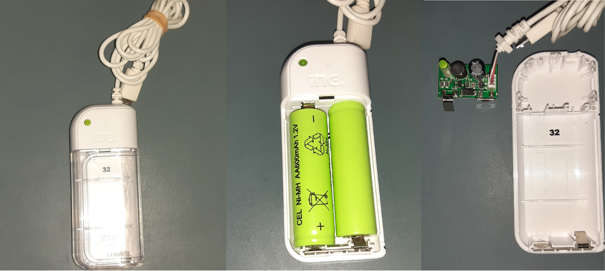
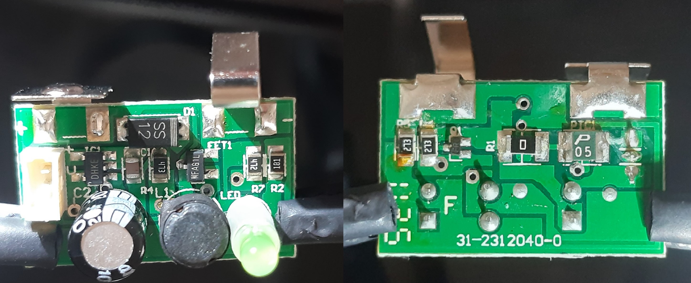
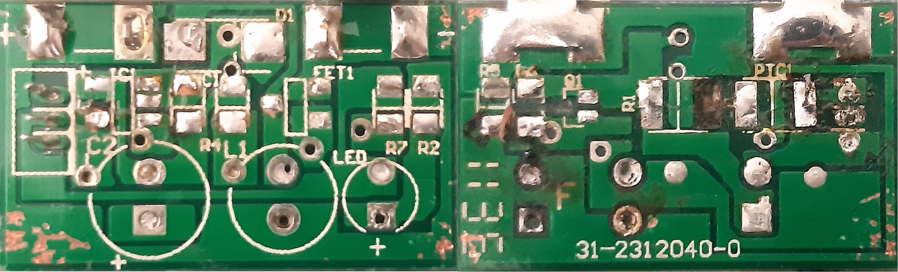
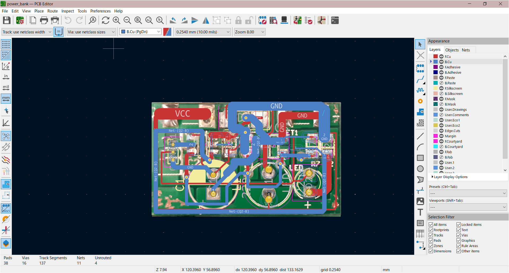
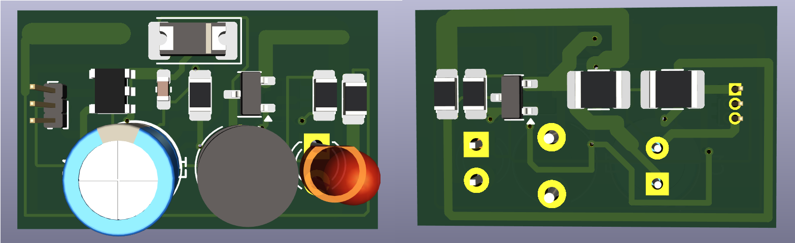
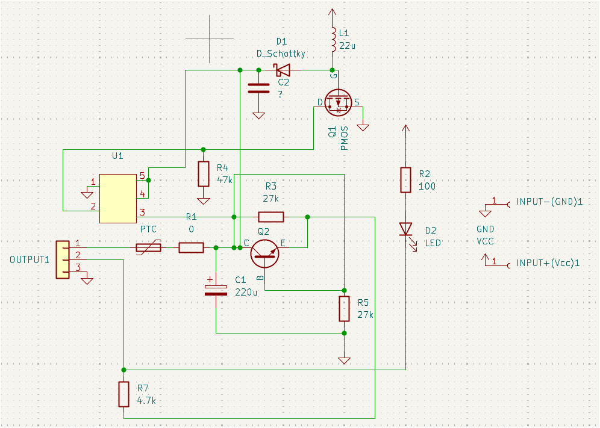
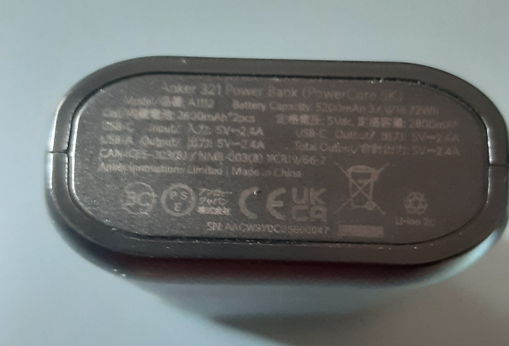

MicroUSBモバイルバッテリーの分解
投稿日: 2025年03月24日
最終更新日: 2025年03月24日
問題：
ハードオフで壊れたスマホのモバイルバッテリーを購入したが、その内部の仕組みが全然わからない。電子回路のリバースエンジニアリングに関する知識もほとんどなく、その習得を目指している。
解決策：
モバイルバッテリーを分解し、内部回路を解析したうえで、様々なツールを使用して再現してみる。そうすることで、電気電子回路・リバースエンジニアリングに関する知識を深めることができる。
結果：
図1は、ハードオフのジャンク品コーナーにあったスマホのモバイルバッテリーを示している。このモバイルバッテリーの電池（単3形）は交換可能で、二次電池（ニッケル水素のもの等）を使うこともできるかもしれない。
残念ながら、出力はマイクロUSBケーブルを経由するため、このモバイルバッテリーをテストできる機器を持っていなかった。しかし、それでもそこから学べることがたくさんあると思ったので、プロジェクトを続行した。

図１ モバイルバッテリー
まず、ユーザーマニュアルを見つけるために、
モバイルバッテリーのロゴを手がかりにインターネットで検索してみたが、「INC」や「INE」で検索しても、役に立つ情報は得られなかった。次に内部回路をケースから取り出し、両面の写真を撮った。
図２は、その結果を示す。

図２ 内部回路の基盤（左：表側、右：裏側）
回路の配線（経路）は様々素子で見えにくかったので、全ての素子をC型のこて先で加熱して取り外し、その結果は図３に示している。
SMD部品を扱うのは初めてだったため、回路の経路や、いくつかの部品（R1、Q1など）を再利用できないほど損傷させてしまった。その結果、回路全体の解析がさらに難しくなり、誤った結果が出た可能性がある。

図３ 素子を取り外した状態の基盤（左：表側、右：裏側）
次に、マルチメーター、懐中電灯、自分の目を駆使して、LTSpice（回路シミュレーターソフト）で回路を再現してみた。
しかし、その作業はあまりにも複雑だったため、別のアプローチを取ることにした。KiCadというフリーソフトを使用し、まず回路の3Dモデルを作成してから、回路を作図した。
KiCadでは、図３のような画像を参照画像としてアップロードし、その上に回路を描くことで3Dモデルを生成でき、リバースエンジニアリングに非常に役立つソフトである。
使い方に慣れるまで少し時間がかかったが、最終的にはプロセス全体を大幅に簡略化できた。

図４ KiCadにおいてのモバイルバッテリーの回路

図５ モバイルバッテリー回路の3次元モデル（左：表側、右：裏側）
図４、５は、KiCadを使用して作ったモバイルバッテリーの回路とその3次元のモデルを示す。3次元モデルは図２と同様なものにならなかったが、重要なところの全て再現したことが分かる。
基板の寸法は、実際の基盤と同じものになった（25mmx15mm）。図６は、図５から作った最終的な回路図を示す。

図６ リバースエンジニアリングしたモバイルバッテリー回路
図２を見ると、トランジスタ（Q1、Q2（FET1））、ダイオード（D1）、ICチップ（U1（IC1））には名前がなかったり、どのデータシートにも該当しない適当な名称が付けられていたりすることがわかる。
そのため、U1の回路記号とフットプリントを自作し、各部品のピン配置を回路上の位置から推測するしかなかった。また、C2はSMDのコンデンサだったため、その値が不明だった。
昇降圧型コンバータ
トランジスタのピンが破損していたため、種類を特定することはできなかったが、Q1はコモンベース構成のNPNトランジスタ、Q2は昇圧型コンバーターのP型MOSFETであると推測した。
これらを前提に基本的な回路解析を行い、回路の仕組みを理解しようとした。これらを前提に回路の動作を理解しようとした。
もちろん、私の推測が誤っている可能性もあるため、読者の皆様には、まず自身で回路を解析し、その後で私の考察と照らし合わせて確認することを推奨する。
 図７ モバイルバッテリー回路の動作
図７ モバイルバッテリー回路の動作
回路は、図７に示すように4つの主要部分に分けられる。まず、電源は2つの電池（おそらく各1.2～1.5[V]）であり、右側の入力ピンからシステムに電力供給される。
①と④は直接入力(Vcc)に接続されており、①は電圧を昇圧させ（おそらく5[V]まで）、これによってチップU1を動作させる（U1は負荷となる）。④は、LEDを点灯させることで、電池から出力に電流が供給されていることを示す。
②は、PTCサーミスターによって0.5A以上の電流から出力を保護する。③は接続が多く、理解するのが最も難しかった。おそらく、充電電流と昇圧コンバーターの制御に使用されていると思われる。
U1の役割は、昇圧コンバーターのスイッチングを制御し、
入力端子に高電圧が印加された場合に残りの回路を保護するとともに、回路の他の部分に安定した電圧を供給することだろう。
出力はマイクロUSBケーブルを通じて行われるため、最大電圧は5[V]、電流は2A（10[W]）であると考えられる。可溶性PTCサーミスタにより、出力電流は0.5[A]以下に制限されるため、モバイルバッテリーの総出力はおそらく2.5[W]未満だろう。
図8に示すような最新のモバイルバッテリーは、出力に最大12Wを供給できるため、このモバイルバッテリーでの充電には最大で5倍の時間がかかる可能性がある。言うまでもなく、現在ではマイクロUSBケーブルを使用するスマートフォンはほとんどないため、
これがハードオフのジャンクコーナーにあった理由であろう。

図８ Anker321モバイルバッテリー
考察：
私の回路解析は正しくなかったかもしれないが、今回は多くのことを学んだ。最も重要なことは、ジャンク品であろうとなかろうと、あらゆる電子機器が学ぶための素晴らしいリソースとなり得るということである。
他人が作った回路を再現することで、将来自分の回路を設計する際に役立つ新しい視点や知識を得ることができ、また、電気設計を芸術の一種として評価することもできる。
はんだ付けの過程で回路と部品の多くを完全に損傷してしまったため、このプロジェクトの進展はあまりないかもしれない。
しかし、回路の写真をたくさん撮り、回路図も作成したので、将来、電気電子工学の経験をもっと重ねたら、このプロジェクトに再び取り組み、より正確な解析を提供できるかもしれない。
参考文献：
[1]https://lavalink.com/lavablog/articles/micro-usb-vs-usb-c-connectors